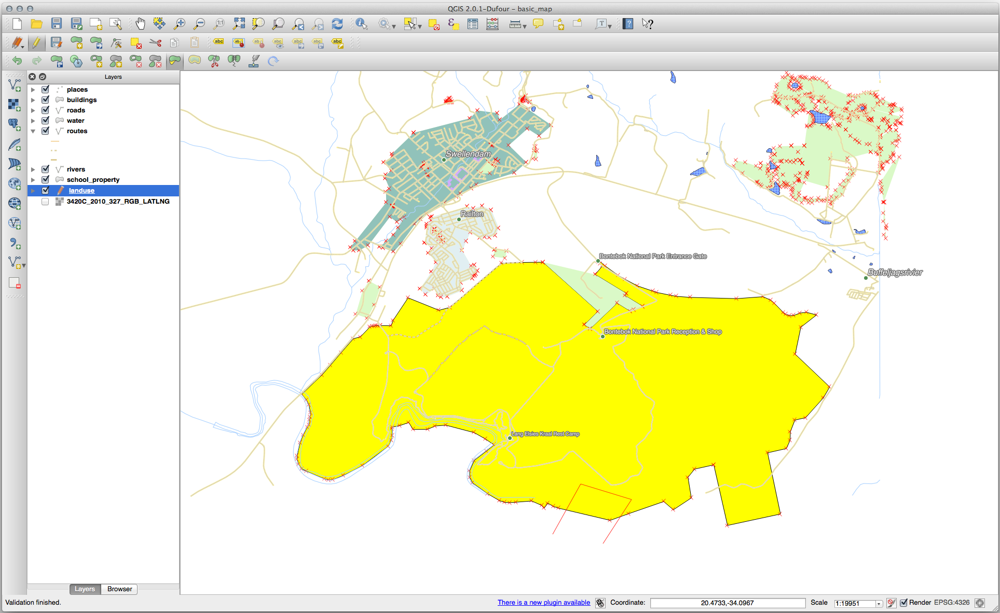

5.2. သင်ခန်းစာ- Feature ၏ ဆက်စပ်တည်ရှိမှုအရဖွဲ့စည်းပုံ (Lesson: Feature Topology)
Topology (ဆက်စပ်တည်ရှိမှုအရဖွဲ့စည်းပုံ) သည် vector data layer များ၏ အသုံးဝင်သော ရှုထောင့်တစ်ခုဖြစ်ပါသည်၊ အဘယ်ကြောင့်ဆိုသော် ၎င်းသည် overlap (ထပ်နေခြင်း) သို့မဟုတ် gap (အဟ) များကဲ့သို့ အမှားများကို လျော့နည်းစေပါသည်။
ဥပမာ- feature နှစ်ခုသည် နယ်နိမိတ် (border) တစ်ခုတည်း ရှိနေပြီး topology ကိုအသုံးပြုပြီး border ကို edit လုပ်လျှင် feature နှစ်ခုစလုံးကို edit လုပ်ကာ border များတစ်ထပ်တည်းကိုက်ညီစေရန် ဂရုတစိုက်လုပ်ရန် မလိုအပ်တော့ပါ။ ထိုအစား ၎င်းတို့၏ တူညီနေသော border ကို edit လုပ်ခြင်းဖြင့် feature နှစ်ခုစလုံးသည် တစ်ချိန်တည်းတွင် ပြောင်းလဲသွားပါလိမ့်မည်။
ဤသင်ခန်းစာအတွက် ရည်မှန်းချက်- ဥပမာများကို အသုံးပြုပြီး topology ကိုနားလည်စေရန်
5.2.1. ★★☆ လိုက်လုပ်ကြည့်ပါ- မျဉ်းအဆစ်များတစ်ခုနှင့်တစ်ခု တိတိကျကျ ထပ်နေစေရန် ဆွဲကပ်ခြင်း (Follow Along: Snapping)
Snapping ပြုလုပ်ခြင်းသည် topology ဆိုင်ရာ ပြင်ဆင်တည်းဖြတ်ခြင်းကို ပိုမိုလွယ်ကူစေပါသည်။ Snapping သည် digitize ပြုလုပ်နေစဉ်တွင် mouse cursor ကို အခြားအရာသို့ ဆွဲကပ်စေပါသည်။ Snapping ရွေးချယ်စရာများကို သတ်မှတ်ရန်-
သို့သွားပါ။
Snapping options dialog တွင်
landuselayer အတွက် Type ကို vertex နှင့် tolerance (လက်ခံနိုင်မှု) ကို12pixels သတ်မှတ်ပေးပါ-
Avoid overlap column ကို အမှန်ခြစ်ခြစ်ထားပါ။
Dialog ကိုပိတ်လိုက်ပါ။
landuse layer ကို select လုပ်ပြီး edit mode (
 ) ကိုဖွင့်ပါ။
) ကိုဖွင့်ပါ။Advanced Digitizing toolbar ကို အသုံးပြုနိုင်/မပြုနိုင် စစ်ဆေးပါ ( အောက်တွင်)။
အောက်ပါ ဧရိယာကို zoom ချဲ့ကြည့်ပါ (လိုအပ်လျှင် layer များနှင့် label များကို ဖွင့်ထားပါ)-

အနီရောင်ဖြင့်ပြထားသော ဧရိယာအသစ် (စိတ်ကူးထဲရှိသော) ကို digitize လုပ်ပါ-

Attribute ဖြည့်သွင်းရမည့် dialog ပေါ်လာလျှင် OGC_FID ကို 999 ဟုပေးပြီး အခြားတန်ဖိုးများကို မပြောင်းလဲပဲ ချန်ထားနိုင်ပါသည်။
Digitize လုပ်နေစဉ်တွင် သေချာဂရုတစိုက်ရှိပြီး ကပ်လျက်ရှိနေသည့်ဧရိယာ၏ vertex များကို snapping လုပ်ထားလျှင် သင်ဆွဲထားသည့်ဧရိယာအသစ်နှင့် ရှိနေပြီးသား ကပ်လျက်ဧရိယာအကြားတွင် မည်သည့် gap (အဟ) မှရှိမည်မဟုတ်ပါ။
Advanced Digitizing toolbar ထဲရှိ
 undo နှင့်
undo နှင့်  redo tool များကိုလည်း ဂရုပြုပါ။
redo tool များကိုလည်း ဂရုပြုပါ။
5.2.2. ★★☆ လိုက်လုပ်ကြည့်ပါ- Topology ဆိုင်ရာ Feature များကို မှန်ကန်အောင်ဖြစ်အောင်လုပ်ခြင်း (Follow Along: Correct Topological Features)
Topology feature များသည် တစ်ခါတရံတွင် update ဖြစ်ရန် လိုအပ်ပါသည်။ ယခု study area ထဲတွင် ဧရိယာတစ်ခုသည် သစ်တောအဖြစ်သို့ ပြောင်းသွားပါသည်၊ ထို့ကြောင့် landuse layer ကို update လုပ်ရန် လိုအပ်ပါသည်။ သစ်တော feature များကို တိုးချဲ့ပြီး ဧရိယာထဲတွင် ထပ်ထည့်ပေးမည်ဖြစ်ပါသည်-
သစ်တော ဧရိယာများကို ထပ်ထည့်ရန် polygon အသစ်များကို ဖန်တီးမည့်အစား Vertex Tool ကိုအသုံးပြုပြီး ရှိနေပြီးသား polygon များကို edit လုပ်ပြီး ထပ်ထည့်ပေးမည်ဖြစ်သည်။
Edit mode ကိုဖွင့်ပါ (မဖွင့်ရသေးလျှင်)
သစ်တောဧရိယာတစ်ခုကို ရွေးချယ်ပါ၊ vertex တစ်ခုကို select လုပ်ပြီး ကပ်လျက်ရှိသော vertex တစ်ခုနေရာသို့ရွှေ့ပါ၊ ထိုအခါ သစ်တော feature နှစ်ခု ထိဆုံပါမည်-

အခြား vertex များပေါ်တွင် click နှိပ်ပြီး ၎င်းတို့ကို snap လုပ်ပြီး နေရာချပါ။
Topology မှန်ကန်အောင်ပြင်ဆင်ထားသော border သည် အောက်ပါပုံစံအတိုင်း ဖြစ်ပါသည်-
Vertex Tool ကိုအသုံးပြုပြီး ဧရိယာအနည်းငယ်ကို ထပ်ထည့်ပါ။
 Add Polygon Feature tool ကိုအသုံးပြု၍လည်း သစ်တော polygon နှစ်ခုကြားရှိ gap (အဟ) ကို ဖြည့်ပေးနိုင်ပါသည်။ Avoid overlap ကိုဖွင့်ထားပါက polygon အသစ်သည် ရှိနေပြီးသား polygon များနှင့် overlap (ထပ်) ဖြစ်နေလျှင် vertex တစ်ခုချင်းစီ ထပ်ထည့်စရာမလိုတော့ပဲ အလိုအလျှောက်ထည့်သွင်းပေးမည်ဖြစ်သည်။
Add Polygon Feature tool ကိုအသုံးပြု၍လည်း သစ်တော polygon နှစ်ခုကြားရှိ gap (အဟ) ကို ဖြည့်ပေးနိုင်ပါသည်။ Avoid overlap ကိုဖွင့်ထားပါက polygon အသစ်သည် ရှိနေပြီးသား polygon များနှင့် overlap (ထပ်) ဖြစ်နေလျှင် vertex တစ်ခုချင်းစီ ထပ်ထည့်စရာမလိုတော့ပဲ အလိုအလျှောက်ထည့်သွင်းပေးမည်ဖြစ်သည်။သင့်အနေဖြင့် ပေးထားသော နမူနာ data ကိုအသုံးပြုနေလျှင် သစ်တောဧရိယာသည် အောက်ပါပုံစံအတိုင်း ဖြစ်နေသင့်ပါသည်-
{kind=link}

သစ်တောဧရိယာကို ပိုများများ၊ ပိုနည်းနည်း သို့မဟုတ် မတူညီသောဧရိယာများ ထပ်ထည့်မိလျှင်လည်း စိုးရိမ်စရာမရှိပါ။
5.2.3. ★★☆ လိုက်လုပ်ကြည့်ပါ- Tool: Feature ကို ပေါ့ပါးအောင်ပြုလုပ်ခြင်း (Follow Along: Tool: Simplify Feature)
အပေါ်တွင်အသုံးပြုခဲ့သော layer တွင်ပင်  Simplify Feature tool ကို ဆက်လက်စမ်းသပ်ကြည့်ပါမည်-
Simplify Feature tool ကို ဆက်လက်စမ်းသပ်ကြည့်ပါမည်-
၎င်း tool ပေါ်တွင် click နှိပ်ပါ။
Vertex Tool သို့မဟုတ် Add Feature tool တစ်ခုခုအသုံးပြု၍ ထပ်ထည့်ခဲ့သော ဧရိယာများထဲမှ တစ်ခုပေါ်တွင် click နှိပ်ပါ။ အောက်ပါ dialog ကိုမြင်ရပါလိမ့်မည်-
Tolerance တန်ဖိုးကို မွမ်းမံပြင်ဆင်ကြည့်ပြီး မည်သို့ဖြစ်သွားသည်ကို စောင့်ကြည့်ပါ-

ထိုသို့လုပ်ခြင်းသည် vertex များ အရေအတွက်ကို လျှော့ချပေးပါသည်။
OK ကိုနှိပ်ပါ။
ဤ tool ၏အားသာချက်သည် ရိုးရှင်းပြီး အလိုလိုလုပ်ဆောင်ပေးနိုင်သော interface ရှိခြင်းဖြစ်သည်။ သို့သော် ဤ tool သည် topology ကို ပျက်ပြားစေသည်ကို သတိပြုကြည့်ပါ။ ရိုးရှင်းအောင်လုပ်ထားသော polygon သည် ၎င်း၏ ကပ်လျက် polygon များနှင့် တူညီသောနယ်နိမိတ်များ ရှိသင့်သော်လည်း ဆက်ရှိတော့မည်မဟုတ်ပါ။ ထို့ကြောင့် ဤ tool သည် တစ်ခုတည်းရှိသော (stand-alone) feature များအတွက် ပိုမိုသင့်တော်ပါသည်။
ရှေ့ဆက်မသွားခင် polygon တွင် ပြုလုပ်ထားသော နောက်ဆုံးပြောင်းလဲမှုကို undo ပြုလုပ်ပြီး ၎င်း၏ မူလအခြေအနေသို့ ပြန်ထားပါ။
5.2.4. ★★☆ မိမိကိုယ်တိုင်ကြိုးစားကြည့်ပါ- Tool: အပေါက်ဖောက်ခြင်း (Try Yourself: Tool: Add Ring)
 Add Ring tool သည် polygon အတွင်း hole (အပေါက်) အပြည့်အဝပါဝင်နေသမျှ (နယ်နိမိတ်ထိစပ်နေခြင်းသည် အဆင်ပြေပါသည်) polygon feature တစ်ခုတွင် interior ring (အတွင်း ကွင်း) တစ်ခုကို ထပ်ထည့်ပေးပါသည် (polygon ထဲရှိ အပေါက်ကို ဖြတ်ထုတ်ပေးခြင်း)။ ဥပမာ- South Africa ၏ အပြင်ဘက်နယ်နိမိတ်ကို digitize ပြုလုပ်ပြီး Lesotho အတွက် အပေါက်တစ်ခု ထပ်ထည့်ရန် လိုအပ်ပါက ဤ tool ကိုအသုံးပြုနိုင်ပါသည်။
Add Ring tool သည် polygon အတွင်း hole (အပေါက်) အပြည့်အဝပါဝင်နေသမျှ (နယ်နိမိတ်ထိစပ်နေခြင်းသည် အဆင်ပြေပါသည်) polygon feature တစ်ခုတွင် interior ring (အတွင်း ကွင်း) တစ်ခုကို ထပ်ထည့်ပေးပါသည် (polygon ထဲရှိ အပေါက်ကို ဖြတ်ထုတ်ပေးခြင်း)။ ဥပမာ- South Africa ၏ အပြင်ဘက်နယ်နိမိတ်ကို digitize ပြုလုပ်ပြီး Lesotho အတွက် အပေါက်တစ်ခု ထပ်ထည့်ရန် လိုအပ်ပါက ဤ tool ကိုအသုံးပြုနိုင်ပါသည်။
Tool ကို စမ်းသုံးကြည့်လျှင် snapping option များကြောင့် polygon တစ်ခုအတွင်း ကွင်းတစ်ခုကို ဖန်တီးရခက်နေပါလိမ့်မည်။ ထို့ကြောင့် snapping ကို ပိတ်ထားရန် အကြံပြုပါသည်။
 Enable Snapping ခလုတ် (သို့မဟုတ် s ကိုသုံးပြီး) ကိုနှိပ်ပြီး
Enable Snapping ခလုတ် (သို့မဟုတ် s ကိုသုံးပြီး) ကိုနှိပ်ပြီး landuselayer အတွက် snapping ကိုပိတ်ပါ။Polygon ဂျီဩမေတြီ၏ အလယ်တွင် hole (အပေါက်) တစ်ခုဖန်တီးရန်
Add Ring tool ကိုအသုံးပြုပါ။- Add polygon tool ကိုအသုံးပြုသလိုပင် target feature ပေါ်တွင် polygon တစ်ခုကို ဆွဲပါ။
Right-click နှိပ်လိုက်ပါက hole ကိုမြင်ရပါလိမ့်မည်။
 Delete Ring tool အသုံးပြုပြီး hole ကိုဖယ်ရှားပါ။ Hole ၏အတွင်းကို click နှိပ်လျှင် ပျက်သွားမည်ဖြစ်သည်။
Delete Ring tool အသုံးပြုပြီး hole ကိုဖယ်ရှားပါ။ Hole ၏အတွင်းကို click နှိပ်လျှင် ပျက်သွားမည်ဖြစ်သည်။
အဖြေ
ပုံသဏ္ဍာန်အတိအကျတူရန်မလိုပါ၊ သို့သော် အောက်ပါပုံစံအတိုင်း feature ၏အလယ်တွင် hole တစ်ခုရသင့်ပါသည်-
နောက်ထပ်လာမည့် tool အတွက် လေ့ကျင့်ခန်းကို ဆက်မလုပ်ခင် သင်ပြုလုပ်ထားသော edit များကို undo ပြုလုပ်ပါ။
5.2.5. ★★☆ မိမိကိုယ်တိုင်ကြိုးစားကြည့်ပါ- Tool: အစိတ်အပိုင်းထပ်ထည့်ခြင်း (Try Yourself: Tool: Add Part)
 Add Part tool ဖြင့် အဓိက feature နှင့်တိုက်ရိုက်ချိတ်ဆက်မနေသော feature တစ်ခုထဲသို့ အစိတ်အပိုင်းတစ်ခု ထပ်ထည့်နိုင်ပါသည်။ ဥပမာ- South Africa mainland ၏ နယ်နိမိတ်များကို digitize လုပ်နေသော်လည်း Prince Edward ကျွန်းစုများကို မထည့်သွင်းရသေးလျှင် ဤ tool ကိုအသုံးပြုပြီး ဖန်တီးနိုင်ပါသည်။
Add Part tool ဖြင့် အဓိက feature နှင့်တိုက်ရိုက်ချိတ်ဆက်မနေသော feature တစ်ခုထဲသို့ အစိတ်အပိုင်းတစ်ခု ထပ်ထည့်နိုင်ပါသည်။ ဥပမာ- South Africa mainland ၏ နယ်နိမိတ်များကို digitize လုပ်နေသော်လည်း Prince Edward ကျွန်းစုများကို မထည့်သွင်းရသေးလျှင် ဤ tool ကိုအသုံးပြုပြီး ဖန်တီးနိုင်ပါသည်။
အစိတ်အပိုင်း ထည့်သွင်းလိုသော polygon ကို
 Select Features by area or single click tool ဖြင့် select လုပ်ပါ။
Select Features by area or single click tool ဖြင့် select လုပ်ပါ။အစွန်အဖျား ဧရိယာ တစ်ခုကို ထည့်သွင်းရန် Add Part tool ကိုအသုံးပြုပါ။
ဖန်တီးထားသော အစိတ်အပိုင်းကို ဖျက်ရန် Delete Part tool ကိုအသုံးပြုပါ။
Note
အစိတ်အပိုင်း၏အတွင်းတွင် click နှိပ်ပြီး ဖျက်ပါ။
{kind=link}
အဖြေ
ဦးစွာ Bontebok National Park ကို select လုပ်ပါ-

အစိတ်အပိုင်းအသစ်ကို ထပ်ထည့်ပါ-
နောက်ထပ်လာမည့် tool အတွက် လေ့ကျင့်ခန်း ဆက်မလုပ်ခင် သင်ပြုလုပ်ထားသော edit များကို undo ပြုလုပ်ပါ။
5.2.6. ★★☆ လိုက်လုပ်ကြည့်ပါ- Tool: Feature များ၏ ပုံသဏ္ဍာန်ကိုပြန်ပြင်ရေးဆွဲခြင်း (Follow Along: Tool: Reshape Features)
 Reshape Features tool ကို polygon feature တစ်ခုကို တိုးချဲ့ရန် သို့မဟုတ် ၎င်းထဲမှ အပိုင်းတစ်ခုကို ဖြတ်ထုတ်ရန် (နယ်နိမိတ်တစ်လျှောက်) အသုံးပြုပါသည်။
Reshape Features tool ကို polygon feature တစ်ခုကို တိုးချဲ့ရန် သို့မဟုတ် ၎င်းထဲမှ အပိုင်းတစ်ခုကို ဖြတ်ထုတ်ရန် (နယ်နိမိတ်တစ်လျှောက်) အသုံးပြုပါသည်။
တိုးချဲ့ခြင်း-
- Select Features by area or single click tool ကိုအသုံးပြုပြီး polygon ကို select လုပ်ပါ။
Polygon အတွင်း left-click နှိပ်ပြီး စတင်ရေးဆွဲပါ။
Polygon အပြင်ဘက်တွင် shape တစ်ခုရေးဆွဲပါ။ နောက်ဆုံး vertex သည် polygon အတွင်းဘက်တွင် ပြန်ရှိနေရပါမည်။
ရေးဆွဲခြင်းကို အဆုံးသတ်ရန် right-click နှိပ်ပါ-

ရလာဒ်သည် အောက်ပါပုံစံနှင့်ဆင်တူပါလိမ့်မည်-
အပိုင်းတစ်ခုကို ဖြတ်ထုတ်ရန်-
- Select Features by area or single click tool ကိုအသုံးပြုပြီး polygon ကို select လုပ်ပါ။
Polygon ၏အပြင်ဘက်တွင် click နှိပ်ပါ။
Polygon အတွင်းဘက်တွင် shape တစ်ခုရေးဆွဲပါ။ နောက်ဆုံး vertex သည် polygon အပြင်ဘက်တွင် ပြန်ရှိနေရပါမည်။
Polygon အပြင်ဘက်တွင် right-click နှိပ်ပါ-
 ရလာဒ်မှာ-

5.2.7. ★★☆ မိမိကိုယ်တိုင်ကြိုးစားကြည့်ပါ- Tool: Feature များကို ပိုင်းဖြတ်ခြင်း (Try Yourself: Tool: Split Features)
 Split Features tool သည် Reshape Features tool နှင့်ဆင်တူပါသည်၊ မတူသည်မှာ Split Features tool သည် အစိတ်အပိုင်း ၂ ခုစလုံး ဆက်လက်ထားရှိပေးပါသည်။
Split Features tool သည် Reshape Features tool နှင့်ဆင်တူပါသည်၊ မတူသည်မှာ Split Features tool သည် အစိတ်အပိုင်း ၂ ခုစလုံး ဆက်လက်ထားရှိပေးပါသည်။
ထို tool ကို polygon တစ်ခုမှ ထောင့်ချိုးတစ်ခုကို ပိုင်းဖြတ်ရာတွင် အသုံးပြုပါမည်။
ဦးစွာ
landuselayer ကို select လုပ်ပြီး ၎င်းအတွက် snapping ကိုပြန်ဖွင့်ထားပါ။- Split Features tool ကို select လုပ်ပြီး မျဉ်းတစ်ကြောင်းစဆွဲရန် vertex တစ်ခုပေါ်တွင် click နှိပ်ပါ။
ကန့်သတ်မည့် မျဉ်းကို ဆွဲပါ။
ပိုင်းဖြတ်လိုသော polygon ၏ “ဆန့်ကျင်ဘက်” အခြမ်းပေါ်ရှိ vertex တစ်ခုပေါ်တွင် click နှိပ်ပြီး မျဉ်းကို အဆုံးသတ်ရန် right-click ကိုနှိပ်ပါ-
ဤနေရာတွင် ဘာမှထူးထူးခြားခြားမဖြစ်သလို မြင်ရပါလိမ့်မည်၊ သို့သော်
landuselayer ကို border မျဉ်းများမပါပဲ ပုံဖော်ပြသထားသည့်အတွက် ပိုင်းဖြတ်ထားသောမျဉ်းအသစ်ကို ပြသလိမ့်မည်မဟုတ်ပါ။- Select Features by area or single click tool ကိုအသုံးပြုပြီး ပိုင်းဖြတ်လိုက်သော အစိတ်အပိုင်းကို select လုပ်ပါ၊ feature အသစ်ကို highlight ဖြင့်ပြသပါလိမ့်မည်-

5.2.8. ★★★ မိမိကိုယ်တိုင်ကြိုးစားကြည့်ပါ- Tool: Feature များကို ပေါင်းခြင်း (Try Yourself: Tool: Merge Features)
ယခုအခါ ပိုင်းဖြတ်ထားသော feature ကို ကျန်ရှိနေသော polygon အစိတ်အပိုင်းထဲတွင် ပြန်ပေါင်းမည်ဖြစ်ပါသည်-
 Merge Selected Features tool နှင့်
Merge Selected Features tool နှင့်  Merge Attributes of Selected Features tool များကို စမ်းသပ်ကြည့်ပါ။
Merge Attributes of Selected Features tool များကို စမ်းသပ်ကြည့်ပါ။ကွဲပြားခြားနားမှုများကို သတိထားကြည့်ပါ။
အဖြေ
ပေါင်းချင်သော polygon နှစ်ခုစလုံးကို ဦးစွာ select လုပ်ထားပြီး Merge Selected Features tool ကိုအသုံးပြုပါ။
OGC_FID
1ဖြစ်သော feature ကို attribute များ၏ source အဖြစ်အသုံးပြုပါ (dialog ထဲရှိ ၎င်းပေါ်တွင် click နှိပ်ပြီး Take attributes from selected feature ခလုတ်ကို နှိပ်ပါ)-
မတူညီသော dataset တစ်ခုကို အသုံးပြုနေလျှင် မူလ polygon ၏ OGC_FID သည် 1 ဖြစ်ချင်မှဖြစ်ပါလိမ့်မည်။ OGC_FID ရှိသော feature ကိုသာ ရွေးချယ်ပါ။
Merge Attributes of Selected Features tool အသုံးပြုခြင်းသည် ကွဲပြားသော ဂျီဩမေတြီများအတိုင်း ဆက်လက်ထားရှိပေးသော်လည်း attribute များအတူတူထုတ်ပေးပါသည်။
5.2.9. နိဂုံးချုပ် (In Conclusion)
Topology editing သည် အရာဝတ္ထုများကို လျင်မြန်လွယ်ကူစွာ ဖန်တီးနိုင်ပြီး မွမ်းမံပြင်ဆင်နိုင်ရုံသာမက topology အရ မှန်ကန်အောင်လုပ်ဆောင်ပေးနိုင်သော အသုံးဝင်သည့် tool တစ်ခုဖြစ်ပါသည်။
5.2.10. နောက်ထပ် ဘာအကြောင်းအရာလဲ? (What’s Next?)
ယခုအခါ အရာဝတ္ထုများ၏ ပုံသဏ္ဍာန်ကို မည်သို့ အလွယ်တကူ digitize လုပ်ရမည်ကို သိရှိပြီးဖြစ်ပါသည်၊ သို့သော် attribute များ ထပ်ထည့်ခြင်းအတွက် ကျန်ရှိနေပါသေးသည်။ နောက်သင်ခန်းစာတွင် attribute များကို ပိုမိုရိုးရှင်းပြီး ပိုမိုထိရောက်စွာ edit လုပ်နိုင်သော form (ပုံစံ) များကို မည်သို့အသုံးပြုရမည်ကို သင်ကြားပေးသွားပါမည်။